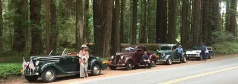
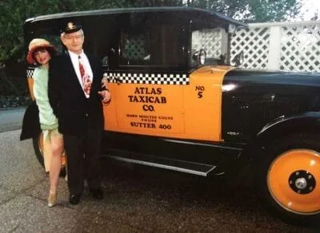
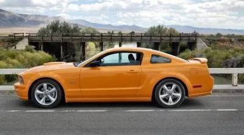

 Here’s a great photo of my vehicles on the way to the Fortuna Redwood Auto ExpoRead More
 With my wonderful dad Don. I used to own this beautiful 1925 Studebaker taxicab.Read More
 RIP. My beloved 2007 Grabber Orange Mustang GT – rear ended and totaled in 2020.Read More
![]() Archived portfolio project by Brand on FireView all work →
Archived portfolio project by Brand on FireView all work →